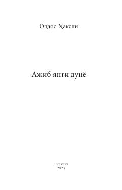

AYInson erkinligi va qalbini yo'qotgan texnologik kelajak haqidagi mashhur distopik roman.
Ushbu asar texnologik jihatdan rivojlangan, ammo inson erkinligi va qalbini yo'qotgan kelajak jamiyatini tasvirlaydi. Muallif avtoritar boshqaruv, genetik muhandislik va farmatsevtika vositalari orqali nazorat qilinadigan utopik dunyoning qorong'u tomonlarini ochib beradi.